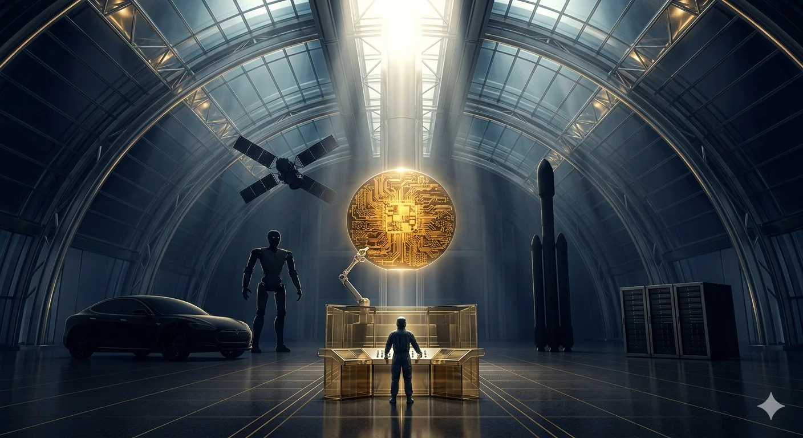
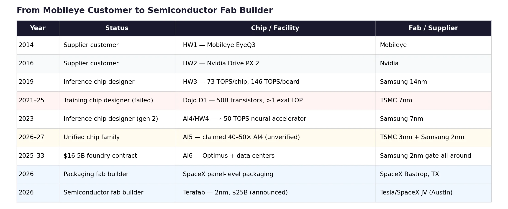
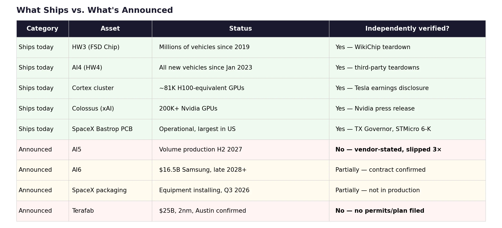

On March 14, 2026, Elon Musk posted five words to X: “Terafab Project launches in 7 days.” The announcement described a $25 billion semiconductor fabrication facility targeting 2nm process technology — the most advanced node in commercial production — with a stated capacity of 100,000 wafer starts per month and an ambition to scale toward one million.[1] If built, it would produce between 100 and 200 billion custom AI chips annually, rivaling the output of TSMC’s most advanced facilities.[2]
Twelve years earlier, Tesla couldn’t modify a supplier’s image-processing algorithm. Its first Autopilot system ran on Mobileye’s EyeQ3 — a chip Tesla didn’t design, running software Tesla couldn’t change, processing 110 frames per second in a pipeline Tesla didn’t control.[3] When Mobileye ended the partnership in July 2016 — after a fatal crash and a dispute over whether Tesla was pushing beyond the hardware’s safety envelope — the automaker had no silicon capability whatsoever.[4] It was, in semiconductor terms, a customer.
The distance between those two moments is the most aggressive vertical integration trajectory any non-semiconductor company has ever attempted. And the question it raises is not whether the ambition is impressive — it is —, but whether the structure that produced it can survive contact with the physics of chipmaking, the governance of cross-entity resource allocation, and the paradox of building compute independence on the back of your largest competitor’s hardware.
No one else on earth can build this orbit. The question is whether a single focal point can hold it.
The orbit
To understand what Musk is building, start with what connects the entities. Tesla’s fleet of over 4 million vehicles equipped with vision-based Autopilot hardware generates real-world driving video—the raw material for training autonomous-driving models.[5] That data flows into Tesla’s Cortex training cluster at Giga Texas, which ran roughly 50,000 H100 GPUs at the end of 2024 and grew to approximately 81,000 H100-equivalent GPUs by the third quarter of 2025.[6] Separately, xAI’s Colossus facility in Memphis — the world’s largest single-site GPU installation — runs over 200,000 Nvidia GPUs training Grok, xAI’s large language model.[7] The models trained on both clusters are deployed on Tesla’s custom inference chips inside vehicles and, increasingly, inside Optimus robots. Tesla’s Megapack batteries provide backup power to xAI’s Memphis data center — Colossus reportedly consumes up to 150 megawatts.[8] SpaceX, which acquired xAI in February 2026, launches the Starlink satellites that could eventually distribute AI compute globally — satellites running on custom silicon co-designed with STMicroelectronics over a decade-long partnership that has shipped over five billion RF chips.[9] SpaceX is also building the largest chip packaging facility in North America in Bastrop, Texas, with a $280 million expansion backed by a $17.3 million grant from the Texas Semiconductor Innovation Fund.[10] And Terafab, if realized, would close the final gap: fabrication itself.
Each entity’s output is another entity’s input. Tesla vehicles produce training data. Training clusters produce models. Custom chips deploy models. Deployed models improve vehicles and robots. Vehicles and robots generate more data. Megapacks power the data centers. SpaceX launches the satellites. The packaging fab packages the chips. The proposed Terafab would manufacture them.
No competitor controls all of these simultaneously. Google comes closest with Waymo, DeepMind, TPU infrastructure, and YouTube — but lacks space assets, energy storage, humanoid robotics, and a consumer vehicle fleet generating real-world data at scale. Amazon has AWS, Zoox, Kuiper, and Trainium — but far less vertical integration across the physical and digital layers. Microsoft and OpenAI have no hardware manufacturing, no vehicle fleet, and no space infrastructure.
The chip architecture itself is converging. Tesla’s roadmap spans seven generations, but two matter most: AI5, the next-generation chip dual-sourced from TSMC on 3nm and Samsung on 2nm, with volume production confirmed by Samsung for H2 2027, designed to serve vehicles, Cybercab robotaxis, and Optimus robots simultaneously; and AI6, covered by a $16.5 billion Samsung contract through 2033, designated for Optimus and data centers.[11] Beyond AI6, a restarted Dojo 3 project (now called AI7) targets “space-based AI compute” for SpaceX. The ambition is a unified chip family — “excellent for inference and at least pretty good for training,” as Musk put it — serving every entity from a shared architecture, with a new design every nine to twelve months.[12]
The financial architecture matches the ambition. Tesla’s accumulated AI-related capital expenditure — including infrastructure — reached approximately $5 billion through the end of 2024, per CFO Vaibhav Taneja; the company’s 2026 capex guidance, also stated by Taneja on the Q4 FY2025 earnings call, exceeds $20 billion.[13] xAI has raised approximately $45 billion in total funding, including a $20 billion Series E in January 2026 at a $230 billion valuation, from investors including Nvidia, Fidelity, and the Qatar Investment Authority.[14] The SpaceX-xAI combination, completed in February 2026, was valued at $1.25 trillion — CNBC reported it as the largest corporate combination in history.[15] Tesla invested $2 billion in xAI shortly before the SpaceX acquisition, converting its stake into a minority position in SpaceX.[16]
Tesla’s market capitalization of approximately $1.3 to $1.6 trillion trades at roughly 200 to 300 times trailing earnings — depending on the measurement date — versus a legacy automaker median of 7 to 12 times trailing earnings. A Bank of America sum-of-parts analysis from late 2025 attributes only 12 percent of Tesla’s enterprise value to its core automotive business, with the remainder assigned to robotaxi, Optimus, Full Self-Driving (FSD) software, and energy storage.[17]
That remaining 88 percent — roughly $1 to $1.35 trillion in market capitalization — is the market’s bet that the silicon strategy will work.[18] The orbit is the substrate beneath the premium.
How the orbit was built
The trajectory from Mobileye customer to semiconductor fab builder followed a pattern: each successful step created the institutional confidence for the next, harder bet. Each bet was an order of magnitude more difficult than the last. And the one failure in the sequence — Dojo — revealed where the pattern breaks.
After the Mobileye breakup, Tesla pivoted to Nvidia’s Drive PX 2 for Hardware 2 in October 2016. But months before the split went public, Musk had already placed his bet on silicon independence. In January 2016, Tesla hired Jim Keller — architect of AMD’s Zen, Apple’s A4/A5, and DEC Alpha — as VP of Autopilot Hardware Engineering. Weeks later, Pete Bannon joined from Apple, where he had led development of the A5 through A9 processors.[19] Two of the most decorated chip architects in the industry were hired simultaneously by a car company with no semiconductor program. The FSD chip design team was formed in February 2016. Eighteen months later, in August 2017, the chip taped out. First silicon returned in December 2017, functional but requiring a respin; the production B0 stepping qualified in July 2018.[20]
Hardware 3 shipped in vehicles from March 2019 — Samsung 14nm, 260mm² die, 6 billion transistors, two custom neural network accelerators delivering approximately 37 trillion operations per second (TOPS) each for a combined 73 TOPS per chip, with two chips per vehicle board providing both redundancy and a total system throughput of roughly 146 TOPS — all within the 100-watt-per-chip envelope of the Nvidia board it replaced.[21] Tesla’s Bannon claimed a 21-fold improvement in image processing over HW2.5 at Autonomy Day in April 2019.[22] Three years from concept to volume production, by a company that had never designed a chip. The accomplishment was genuine and should not be diminished by what followed.
What followed was the belief that if Tesla could build an inference chip, it could build a training chip. The Dojo project, led by former AMD designer Ganesh Venkataramanan, produced the D1 — a 645mm², 50-billion-transistor training processor fabricated by TSMC on 7nm, with 354 custom CPU cores, novel tile-based interconnects, and custom floating-point formats.[23] Tesla scaled D1 into increasingly large clusters, reaching over an exaFLOP of compute across 3,000 chips per deployment unit. During testing, a single cabinet drew 2.3 megawatts before tripping a power substation in San Jose.[24] Musk stated plans to invest over a billion dollars in Dojo infrastructure, including a $500 million facility in Buffalo, New York.[25] Morgan Stanley projected that Dojo could add $500 billion to Tesla’s market capitalization.[26]
The D1 was technically impressive. It was also, in Musk’s eventual assessment, “an evolutionary dead end.”[27] The problem was not the silicon — it was the ecosystem. Training chips compete in Nvidia’s world: CUDA, cuDNN, PyTorch, the entire software stack that makes GPU clusters productive. Dojo required a fully custom software environment with no support for established frameworks. Meanwhile, Tesla was simultaneously building its Cortex cluster on Nvidia H100s—and Cortex was delivering results. The Nvidia cluster trained the models that powered FSD v13. Dojo trained ambitions. By mid-2025, approximately twenty core Dojo engineers departed to found DensityAI, a stealth startup building AI infrastructure chips for robotics and autonomous systems.[28] In August 2025, Bloomberg reported that Tesla disbanded the remaining Dojo team. Bannon — the man who had designed Apple’s A5, delivered Tesla’s HW3, and led the chip program since Keller’s 2018 departure — left the company.[29]
The Dojo write-off was the structural pivot—and, in fairness, the kind of kill decision most organizations cannot make. Walking away from a billion-dollar program with technically impressive silicon because the ecosystem math didn’t close is the opposite of sunk-cost thinking. Musk’s conclusion was not to abandon custom silicon but to abandon the two-architecture approach. AI5 and AI6 would be designed as a unified chip family: optimized for inference but capable of training when deployed in large clusters. “It doesn’t make sense for Tesla to divide its resources and scale two quite different AI chip designs,” Musk wrote.[30] Dojo 3, announced in January 2026, would use the AI5/AI6 architecture — not the D1 lineage — targeting space-based compute for SpaceX.[31]
The escalation continued, but on a single track instead of two. And the next step was harder, not easier. Dojo failed at the software layer — building a training ecosystem to rival CUDA. Terafab is a bet on the manufacturing layer, where the barriers are higher still. “2nm” is a marketing designation, not a physical gate length; actually building at that node requires either partnering with a foundry that offers access to its process technology or developing proprietary process engineering from scratch. TSMC and Samsung do not license their process design rules to third parties — that is the foundry model’s entire moat. Intel Foundry Services is the only leading-edge manufacturer to offer something approaching a partnership model for external fabrication, which makes Musk’s mention of a potential Intel collaboration not one option among three but the only technically plausible path for Terafab at the leading edge.[32]
The inference-to-training pivot had a parallel in hardware manufacturing. SpaceX opened the largest PCB manufacturing site in the United States at Bastrop, Texas, in 2024, supplying Starlink’s demand for printed circuit boards at industrial scale. Equipment for an advanced chip packaging line — using fan-out panel-level packaging with 700mm × 700mm substrates, the largest in the industry — began arriving at Bastrop in September 2025, with small-scale production targeting the third quarter of 2026.[33]
Then came the Samsung megadeal: $16.5 billion through 2033 for AI6 chip fabrication at Samsung’s Taylor, Texas facility using 2nm gate-all-around transistors — Samsung Foundry’s largest publicly disclosed contract.[34] And then Terafab itself — Tesla’s own fab, announced on the Q4 2025 earnings call, with Musk noting that even best-case supplier projections fell short of Tesla’s projected chip demand within three to four years.[35]
The pattern traces from Mobileye customer to Nvidia customer to inference chip designer, through the failed training chip attempt and the pivot to a unified chip family, past the $16.5 billion Samsung contract and the SpaceX packaging fab, to the announcement of Tesla’s own semiconductor fab. Each step required capabilities that the previous step didn’t test.

The escalation is genuine, the execution is partial, and the distance between where Tesla is (shipping AI4, designing AI5) and where Terafab requires it to be (operating a competitive 2nm fab) is the distance between designing a chip and manufacturing one, which is to say, the distance between architecture and physics.
Only one company has successfully completed the first half of this transition. Apple went from chip customer to chip designer over 12 years — the PA Semi acquisition in 2008, A4 in 2010, and M1 in 2020 — and now designs the most power-efficient consumer silicon on earth under a design lead, Johny Srouji, who has run the program for 18 years.[56] But Apple stopped at design. TSMC fabricates every Apple chip. Apple also ships over 230 million iPhones a year — the amortization base that makes custom silicon economics viable. Tesla’s Autopilot-equipped fleet is roughly two orders of magnitude smaller today; the economic case for custom silicon depends on Optimus, Cybercab, and xAI inference volumes that do not yet exist — though Apple’s own volumes were similarly modest at the A4 stage in 2010. The most successful custom silicon program in history examined the gap between chip design and manufacturing and chose not to cross it. Tesla, with a smaller volume base and a less stable design team, is proposing to cross it.
What actually ships
The honest assessment requires separating silicon that exists from silicon that has been announced.

Hardware 3 was real. It shipped in millions of vehicles, proved a car company could design competitive inference silicon, and established the institutional capability. Hardware 4 ships today — Samsung 7nm, with neural network performance of roughly 50 TOPS per system-on-a-chip (SoC), running FSD v13 at native camera resolution; Musk has described it as three to eight times more powerful than its predecessor.[36] These are production chips doing production work. xAI’s Colossus is real — 200,000-plus Nvidia GPUs that trained Grok 3, which ranked number one on the LMSys Chatbot Arena at launch.[37] SpaceX’s Bastrop PCB plant is operational, and the packaging facility is in equipment installation. STMicroelectronics has shipped over five billion Starlink chips, as independently confirmed in an SEC 6-K filing.[9] These are verifiable accomplishments.
AI5 is not. Every performance claim for AI5 — 40 to 50 times AI4 performance, 8 times raw compute, 3 times efficiency per watt — traces to Musk’s statements on X and earnings calls.[39] No independent benchmark exists. No third-party teardown has been published. The production timeline has slipped three times: originally scheduled for January 2026, revised to the end of 2026, pushed to early 2027, and now confirmed by Samsung’s foundry president as H2 2027 volume production at the Taylor, Texas facility.[40] The dual-sourcing strategy — TSMC 3nm and Samsung 2nm producing physically different implementations of the same chip across foundries using different transistor architectures (FinFET versus gate-all-around nanosheet) — is a genuine act of supply chain sophistication, providing both risk mitigation and supplier leverage that no other automaker has attempted. It is also unprecedented for an automaker and exceptionally rare even among dedicated semiconductor companies, requiring parallel validation and qualification processes where the power curves, thermal behavior, and memory bandwidth characteristics differ at the transistor level.[41] AI5 may well deliver. But the orbit’s multi-trillion-dollar valuation premium rests substantially on a chip that has not been independently tested, whose production date has shifted three times, and whose claimed performance improvement is extraordinary by any industry standard. For comparison, Nvidia’s generational improvements between H100, H200, and B200 have ranged from roughly 1.5 to 3 times on comparable inference workloads. Tesla is claiming 40-50 times.
AI6 is a contract. The $16.5 billion Samsung deal is signed and confirmed by multiple independent sources, but it is a manufacturing commitment, not a product.[34] AI6 design is in progress; volume production was projected for mid-2028, but Samsung’s 2nm multi-project wafer run has slipped approximately six months, pushing realistic volume production to late 2028 or beyond. Terafab is, as of this writing, an earnings call disclosure that became a launch event — site confirmed (Austin), corporate structure announced (Tesla/SpaceX joint venture), but no process partner, no filed construction permit, and no disclosed engineering plan.[1]
The gap between what ships and what’s announced is the silicon version of the Commitment-vs-Spend Gap I’ve applied to hyperscaler nuclear deals and AI capex elsewhere in this publication.[44] Announced chip performance is to delivered silicon what a hyperscaler’s nuclear MOU is to grid-connected power: the intention is real, the physics are unforgiving, and the timeline is almost always longer than the press release suggests.
The focus
Kepler’s first law: orbits are ellipses with the gravitating body at one focus. Not the center — the focus. Remove the mass at that point, and the orbit dissolves into a straight line. Musk is the gravitational mass at the focus of this orbit. He is the CEO of Tesla, the controlling shareholder of SpaceX (which now owns xAI), and the person who directs resource allocation across all five entities. The chips, the data, the capital, and the talent all curve around him. The structural question is whether a single focal point — no matter how energetic — can hold an orbit this large.
Three risks concentrate at the focus.
The first is execution. The orbit’s value depends on silicon that doesn’t yet exist at the claimed performance level. Tesla has proven it can design inference chips — HW3 is the evidence. It has not proven it can design training-grade chips (Dojo failed), manufacture chips at scale (Terafab is an announcement), or deliver a chip at 40 to 50 times its predecessor’s performance (AI5 is unverified).
Musk’s companies have a track record of delivering manufacturing feats that conventional analysis deemed impossible — reusable rocket boosters, a Gigafactory built in 11 months, a 100,000-GPU data center assembled in 122 days. Semiconductor fabrication is categorically different. The escalation from inference design to fab construction requires capabilities that are not incrementally but fundamentally harder. Intel spent decades and hundreds of billions of dollars building fab capacity, yet it still fell behind TSMC. Samsung’s Taylor, Texas, facility — where Tesla’s AI6 will be manufactured — has faced yield challenges that have delayed the production of its most advanced nodes.[45] Tesla proposing to build a competitive 2nm fab from scratch is not impossible. It is, however, the hardest thing in manufacturing.
There is also a physical bottleneck that no amount of capital can accelerate. A 2nm fab requires extreme ultraviolet lithography tools manufactured by ASML — the only company on earth that makes them. Each machine costs over $300 million; ASML’s order book is filled through 2028.[57] Even Jensen Huang — who has more reason than anyone to want additional fab capacity in the world — warned at a TSMC event in November 2025 that building advanced chip manufacturing is “extremely hard” and that matching TSMC’s capabilities is “virtually impossible.”[58] Musk’s response has been characteristically dismissive: in a January 2026 interview, he argued that the semiconductor industry has “got cleanrooms wrong” and bet he could eat a cheeseburger and smoke a cigar inside a 2nm fab, proposing “wafer isolation” — sealing wafers in nitrogen-purged micro-environments — as an alternative to the hyper-sterile factory floors that every leading-edge fab on earth considers non-negotiable.[59] Whether this reflects a genuine insight about wafer containment or a misunderstanding of what 2nm fabrication physically requires is a question the March 21 event left unanswered.
The second is governance. Synergies and conflicts of interest are the same resource flows viewed from different angles. Tesla sold $430 million in Megapack batteries to xAI in 2025 — a synergy from Tesla Energy’s perspective, but a related-party transaction from a shareholder’s perspective.[46] Musk diverted 12,000 H100 GPUs from Tesla to xAI in late 2023, delaying over $500 million in Tesla shipments — confirmed by leaked Nvidia internal communications reported by CNBC.[47] Musk’s defense — that Tesla’s Cortex facility wasn’t ready to receive the GPUs — may explain the logistics, but it does not address the fiduciary question: GPUs purchased with Tesla capital were redirected to a private entity in which Musk held a controlling personal stake. At least eleven Tesla AI employees migrated to xAI, including the computer vision chief.[48]
The $2 billion Tesla investment in xAI crystallizes the problem. In November 2025, Tesla shareholders voted on whether to authorize a potential xAI investment: 1,058,999,435 shares in favor, 916,321,296 against, 473,073,200 abstaining. Tesla’s bylaws count abstentions as votes against; the proposal failed.[49] Tesla’s board approved the investment two months later anyway, under existing board authority.
The board that approved it is the board where Chancellor McCormick has found “extensive ties” to Musk, where Kimbal Musk serves as a director, and where chair Robyn Denholm publicly claimed Tesla and xAI are “fundamentally different in the AI space” — a position rendered untenable five days later when Musk announced Digital Optimus, a formal joint Tesla-xAI project integrating Grok with Tesla hardware.[50] A shareholder lawsuit in Delaware Chancery Court seeks to force Musk to disgorge his entire xAI stake to Tesla.[51] Tesla’s subsequent reincorporation in Texas and the passage of Texas SB 29 — imposing a three percent ownership threshold for derivative lawsuits, approximately $40 to $50 billion in Tesla stock at recent prices — raised the barriers to shareholder litigation precisely as cross-entity flows accelerated.[52] At the same meeting where the xAI investment proposal failed, a shareholder proposal to repeal the three percent threshold was defeated by a three-to-one margin — 611 million shares for repeal versus 1.82 billion against.[49]
The operational management of each entity is distributed. SpaceX runs under Gwynne Shotwell. Tesla has a full executive team. The orbit functions without Musk personally directing daily operations. The governance risk is not operational — it is allocative. Capital allocation, strategic direction, and the cross-entity resource flows that determine where GPUs ship, where talent migrates, and where shareholder money goes are directed by one person who sits on both sides of every transaction. This is also, it must be said, the structure that built the orbit in the first place. No committee would have moved 12,000 GPUs to Memphis in a weekend, redirected Megapacks to power them, or signed a $16.5 billion Samsung contract while simultaneously announcing a competing fab. The speed and audacity are features of concentrated control, not accidents. The question is whether the same structure that enables a $1.25 trillion combination also produces the accountability that $1.25 trillion requires — and the shareholder vote override, the SB 29 threshold, and the Proposal 10 defeat suggest the answer is: not yet.
On March 21, the answer evolved but did not resolve. Musk took the stage at Austin’s defunct Seaholm Power Plant to formally launch the Terafab Project — and SpaceX, not Tesla, made the initial announcement, with Tesla’s own post following.[60] The project was described as a joint venture between Tesla and SpaceX, with Musk calling it the most “epic chip building exercise in history by far.”[60] Then came the allocation: the facility’s stated goal is to produce over a terawatt of compute per year, with approximately 80 percent of output designated for space applications and 20 percent for ground — Musk’s announced target, not yet a contractual commitment, but a signal of where the value is intended to flow. Eighty percent for SpaceX. Twenty percent for Tesla.
A formal joint venture is a governance instrument: auditable, contractual, with defined capital contributions. That is a structural improvement over the ad hoc resource flows described in the piece. But the allocation ratio tells you where the value flows. Tesla shareholders — whose board overrode their vote to invest $2 billion in xAI, which SpaceX then acquired — are now co-funding a semiconductor facility that will produce four-fifths of its output for a company they do not own shares in. The JV institutionalizes the cross-entity structure. It does not independently govern it. And the 80/20 split tells you which entity the orbit was built to serve.
The third is the Nvidia dependency paradox. Musk’s silicon strategy exists to achieve compute independence from Nvidia. The ecosystem it replaces currently provides most of the computing power on which the ecosystem runs. Tesla and xAI combined spend an estimated $24 to $26 billion annually on Nvidia GPUs and related infrastructure — a figure that includes data center construction and networking, not just GPU procurement alone.[53] xAI’s Colossus runs on Nvidia. Tesla’s Cortex runs on Nvidia. Custom silicon (AI5) won’t reach volume production until mid-2027 at the earliest. xAI’s rumored custom ASIC with Broadcom — codenamed X1 — is in early development.[54]
The dependency is temporary by design — building the replacement is the whole point of the silicon strategy. But the transition window has two dimensions. The first is whether AI5 ships on time. The second is whether Nvidia’s own roadmap — H100 to B200 to GB300, each generation compressing the performance gap that custom silicon is designed to exploit — narrows the advantage before Tesla’s chips reach production. If AI5 slips again, or if Nvidia deprioritizes Musk’s entities during a supply crunch — and the GPU diversion scandal shows resource conflicts have already occurred, albeit flowing in the other direction — the orbit loses momentum precisely when it needs maximum compute to train the models that justify the valuation premium.
The mirror
The parallel to “Open Source, Closed Orbit” — this publication’s analysis of Nvidia’s ecosystem strategy — is structural, not superficial. That piece described Nvidia’s developer ecosystem as a black hole: centripetal, routing all gravity back to Nvidia hardware, converting open-source community adoption into hardware lock-in through an eight-domain replication strategy. The community thought it was building freedom; it was building capture.[55]
Musk’s orbit is a different shape but shares the same structural vulnerability. Nvidia’s black hole depends on CUDA — remove CUDA compatibility, and the ecosystem unravels. Musk’s orbit depends on the focal point — remove or overload the single person directing resources across five entities, and the orbit dissolves. Both are closed systems that derive their power from a single irreplaceable element. Nvidia’s is a software ecosystem. Musk’s is a person.
The deeper parallel is this: both systems are simultaneously the strongest competitive position in their domain and the most concentrated risk. Nvidia’s CUDA lock-in makes it nearly impossible for competitors to attract developers — and nearly impossible for Nvidia to evolve past CUDA if a better paradigm emerges. Musk’s cross-entity orbit makes it nearly impossible for competitors to assemble the same vertical stack — and nearly impossible to institutionalize the orbit beyond one person’s attention span, capital allocation decisions, and tolerance for related-party governance risk.
What breaks
The orbit-and-focus framework produces specific falsifiability conditions.
The orbit thesis strengthens if AI5 ships on time and delivers independently verified performance within the range of Musk’s claims — specifically, if a third-party benchmark confirms that performance exceeds 1,500 TOPS in production silicon by mid-2027. It strengthens further if Terafab breaks ground with a credible construction timeline and process partner, and if SpaceX’s Bastrop packaging facility reaches volume production on its stated Q1 2027 schedule. Each delivered milestone compresses the gap between announced ambition and operational reality.
The focus thesis strengthens if AI5 slips again, if Terafab remains an announcement without filed construction permits by the end of 2026, or if the Delaware Chancery lawsuit yields discovery revealing the scale of inter-company transfers the board did not independently evaluate. It strengthens decisively if Musk’s attention fragments further — a real risk given that he simultaneously serves as CEO of Tesla, controls SpaceX (which now includes xAI), owns X, and has intermittently led the Department of Government Efficiency. The orbit is built around a person, not an institution, and whether it can be institutionalized is a question the current governance structure is not designed to answer.
The two theses don’t yield a clear verdict because they describe the same structure from opposite angles. The orbit is real: no competitor can assemble this combination of fleet data, training compute, custom silicon, edge deployment, energy infrastructure, satellite connectivity, and packaging capability under coordinated control. The focus is real: every element of that combination depends on chips that haven’t been independently verified, governance that hasn’t been independently tested, and compute independence that hasn’t been achieved.
March 21 told us something. Musk delivered a site — Austin — and a corporate structure — a Tesla/SpaceX/xAI joint venture.[61] He described an “advanced technology fab” with equipment to make and test any kind of chip, starting small before scaling to the mega-facility. That is more than a rendering and a target date. It is also less than a process partner, a filed construction permit, or a disclosed engineering plan. Bloomberg noted that Musk “has no background in semiconductor production and a history of over-promising on goals and timelines.” The stepping-stone approach — build a process development fab first, learn, then scale — is how credible semiconductor companies operate, and it is a more realistic path than the hundred-thousand-wafer-starts-per-month announcement suggested. It also means the timeline to volume production extends further, which lengthens the Nvidia dependency window the piece has described.
The structural question the event could not answer is the one the orbit poses by its own design: whether the most ambitious vertical integration play in the history of the technology industry can survive the single point of failure it was built around. Tesla went from a company that couldn’t modify a Mobileye algorithm to a company that proposes to manufacture its own 2nm semiconductors — and allocate 80 percent of the output to space. The orbit that connects those two points is extraordinary. The focus that holds it together is one person, five companies, and an allocation ratio that tells you which company the orbit was really built for.
Notes
[1]Musk, X post, March 14, 2026. Tesla first confirmed Terafab on its Q4 FY2025 earnings call on January 28, 2026. CFO Vaibhav Taneja acknowledged cost was “not yet incorporated” into the $20B+ 2026 capex guidance. The $25B estimate and specific output figures (100–200B chips, 100K wafer starts/month scaling to 1M) derive from Musk statements across the earnings call, shareholder meetings, and X posts — not engineering plans or SEC filings.
[2] TSMC's total output comparison is approximate. TSMC’s monthly wafer starts across all nodes exceeded 1.3 million as of 2024. Tesla’s 1M wafer target would approach ~70% of TSMC’s total advanced-node capacity, concentrated in a single US facility.
[3] Tesla Autopilot hardware history:Wikipedia, “Tesla Autopilot hardware,”accessed March 2026. HW1 used Mobileye EyeQ3, processing ~110 fps. Vehicles manufactured after September 2014.
[4] Mobileye ended its partnership in July 2016. Amnon Shashua: Tesla “was pushing the envelope in terms of safety.” Tesla claimed Mobileye attempted to block in-house vision development.CNBC, Bloomberg, Consumer Reports, July–September 2016.
[5] Tesla’s cumulative vehicle deliveries exceed 7 million through Q1 2026. “Over four million” refers to vehicles equipped with HW3 or later vision-based Autopilot hardware capable of generating training data, not total deliveries. Earlier HW1/HW2 vehicles generate less usable training data due to sensor limitations.
[6] Tesla Q4 FY2025 earnings call, January 28, 2026; shareholder deck. Cortex deployment is described as “roughly 50,000 H100 GPUs” at Q4 FY2024, expanded through 2025. 81,000 H100-equivalent figure includes 16,000 H200s per multiple reports. The H100-equivalent conversion is approximate.
[7] xAI Colossus: 100,000 H100s operational September 2024 (122-day build); doubled to 200,000 by early 2025; 150K H100 + 50K H200 + 30K GB200 as of mid-2025. Sources: CNBC, Data Center Dynamics, R&D World,xAI official page. xAI claims “over 1 million H100-equivalent compute” as of January 2026 — vendor-claimed.
[8] Tesla Megapack sales to xAI: $430 million in 2025, per multiple reports, including Electrek and financial news aggregators. Described as 3.4% of Tesla Energy revenue.
[9] STMicroelectronics: “over 5 billion” RF antenna chips shipped to SpaceX. Source: STMicroelectronics SEC 6-K filing and press release, 2025. Decade-long partnership. Current rate: 5 million chips per day, projected to double by 2027. Yahoo Finance,SemiWiki.
[10]Texas Governor’s Office press release, March 12, 2025: $17.3 million Texas Semiconductor Innovation Fund grant to SpaceX for $280 million expansion of Bastrop facility. One million additional square feet, 400+ jobs, including PCB production, semiconductor failure analysis lab, and advanced packaging.
[11] Tesla chip roadmap: AI4 (Samsung 7nm, shipping since January 2023), AI4.5 (three-SoC transitional), AI5 (TSMC 3nm + Samsung 2nm, H2 2027 per Samsung Foundry President Han Jin-man at Samsung shareholders’ meeting, March 18, 2026; Reuters), AI6 ($16.5B Samsung contract, 2nm GAA, volume late 2028 or beyond — Samsung’s 2nm MPW run postponed ~6 months per The Elec, March 2026; Electrek), AI7/Dojo 3 (restarted January 2026 for space compute). Sources:Reuters, The Elec/Electrek,TrendForce,Wikipedia “Tesla Autopilot hardware”.
[12] Musk, X post, August 2025: “The Tesla AI5, AI6, and subsequent chips will be excellent for inference and at least pretty good for training.” Iteration cadence for new chip design: every 9–12 months, per Musk, reported by Teslarati and multiple outlets, late 2025.
[13] Tesla AI capex: CFO Taneja, Q4 FY2024 earnings call (January 2025): “accumulated AI-related capital expenditures, including infrastructure, so far have been approximately $5 billion.” This is management’s characterization of how total capex was allocated, not an audited line item —Tesla’s 10-K(filed January 29, 2025, SEC EDGAR CIK 0001318605) reports total capital expenditures of $11.34B for FY2024 but does not separately itemize AI-related spending. 2026 capex guidance of $20B+ was stated by Taneja on the Q4 FY2025 earnings call, January 28, 2026. B-tier for AI allocation; A-tier for total capex.
[14] xAI funding: Series E raised $20B at $230B valuation, perxAI official announcementand CNBC, January 2026. Investors include Nvidia, Fidelity, Qatar Investment Authority, and MGX (Abu Dhabi). Total funding is approximately $45B, including ~$5B debt facility (Morgan Stanley). Revenue estimated at ~$3.8B ARR end-2025 (consolidated with X) per Sacra and analyst estimates — private company, no filings.
[15]CNBC, February 3, 2026: “Musk’s xAI, SpaceX combo is the biggest merger of all time, valued at $1.25 trillion.” All-stock acquisition of xAI by SpaceX.
[16] Tesla $2B xAI investment: confirmed January 2026, perElectrek, CNBC, FinancialContent. Tesla’s stake was converted to a minority position (<1%) in SpaceX following the SpaceX-xAI acquisition. FTC clearance confirmed per Analytics Insight.
[17] Bank of America's sum-of-parts analysis, late 2025, was attributed across multiple financial news sources, including Investing.com. Breakdown: automotive 12%, robotaxi 45%, Optimus 19%, FSD software 17%, energy storage 6%. Tesla's P/E ratio is approximate and varies significantly with share price; the range of ~200–300× trailing earnings reflects fluctuation across Q4 2025–Q1 2026. Legacy automaker median P/E of 7–12× per analyst coverage.
[18] The implied AI/autonomy premium is the author’s calculation: market cap minus a fundamental DCF valuation of the automotive business, estimated at roughly $200–250 billion based on peer automotive multiples applied to Tesla’s auto revenue.
[19] Keller was hired in January 2016 from AMD; Bannon was hired in February 2016 from Apple. Both reported byElectrek(exclusive, February 28, 2016) and 9to5Mac. Keller: architect of AMD Zen, Apple A4/A5, DEC Alpha. Bannon: led Apple A5–A9 development. The FSD chip design team was formed in February 2016, per WikiChip.
[20]WikiChip, “FSD Chip – Tesla”: tape-out August 2017, first silicon December 2017, “fully working.” “A number of additional modifications were done to the design, requiring respinning.” B0 stepping released to manufacturing in April 2018, full production after qualification in July 2018.
[21] HW3 specifications: Samsung 14nm, Austin, TX fab, 260mm², 6 billion transistors, 12 ARM Cortex-A72 at 2.6 GHz, 1 GHz Mali GPU, two custom neural network accelerators (NPUs) at 36.86 TOPS each = 73.7 TOPS per chip. Two chips per vehicle board for redundancy, providing ~144 TOPS system throughput. 100W max power per chip. WikiChip; Wikipedia “Tesla Autopilot hardware”;WikiChip Fuse, “Inside Tesla’s Neural Processor in the FSD Chip,” September 2019.
[22] Bannon, Tesla Autonomy Day, April 22, 2019: claimed 21× improvement in image processing (2,300 fps vs. 110 fps for HW2.5). Vendor-claimed. Hexus.net, WikiChip.
[23] Dojo D1: TSMC 7nm, 645mm², 50 billion transistors, 354 CPU cores, custom ISA (RISC-V + proprietary). CFloat8/CFloat16 formats published in the October 2021 whitepaper.Wikipedia “Tesla Dojo”; WikiChip.
[24] Dojo scaling architecture: Training Tile = 25 D1 chips in 5×5 array, 9 petaFLOPS at BF16, 11 GB SRAM, 36 TB/sec bandwidth, 15 kW (288A at 52V). Six tiles per System Tray (with 512 x86 host cores); two trays per Cabinet; 10 Cabinets per ExaPOD (3,000 D1 chips, >1 exaFLOP). Cabinet tripped the 2.3 MW substation in San Jose, per the AI Day 2022 presentation.Wikipedia “Tesla Dojo”.
[25] Musk, Q2 2023 earnings call (Bloomberg, July 19, 2023): “We will be spending well over $1 billion on Dojo” through end-2024. This is a stated investment plan, not a confirmed expenditure. CFO Kirkhorn clarified: split between R&D and capex, in line with the three-year expense outlook. Buffalo $500M investment:TechCrunch, January 26, 2024; confirmed at New York governor press conference. The Register, July 21, 2023; Fortune, December 7, 2023.
[26] Morgan Stanley, September 2023: projected Dojo could add $500 billion to Tesla's market cap via robotaxi and software revenue. Analyst estimate, B-tier.
[27] Musk, X post, August 11, 2025: “Once it became clear that all paths converged to AI6, I had to shut down Dojo and make some tough personnel choices, as Dojo 2 was now an evolutionary dead end.”TechCrunch, Electrive, eWeek.
[28] DensityAI: co-founded by Ganesh Venkataramanan, Bill Chang, and Ben Floering. Reuters reported ~20 departures.TechCrunch, Bloomberg, eWeek, August 2025.
[29]Bloomberg, August 7, 2025: Tesla disbanded the Dojo team, Pete Bannon departing. Confirmed by CNBC and TechCrunch.
[30] Musk, X post, August 2025: “It doesn’t make sense for Tesla to divide its resources and scale two quite different AI chip designs.” eWeek, TechCrunch, Electrive.
[31] Musk, January 2026: Dojo 3 restarted, built on the AI5/AI6 chip family for “space-based AI compute.”TechCrunch, January 20, 2026; TechSpot; Teslarati.
[32] “2nm” is a marketing designation used across the semiconductor industry that does not correspond to a physical transistor dimension. TSMC and Samsung operate as pure-play foundries: they manufacture chips designed by customers but do not license their process design rules or process technology to third parties. Intel Foundry Services (IFS) is the only leading-edge manufacturer to offer external fab partnerships, though IFS has struggled with utilization and its own process delays. A Terafab using Intel process technology would be a licensed fab; a Terafab developing proprietary process technology would be historically unprecedented for a company outside the foundry industry. Sources: semiconductor industry structure is well-established; Musk Intel comments per Reuters, Data Center Dynamics; Digitimes reporting notes Musk has attracted “senior experts from TSMC, Intel, Samsung.”
[33] SpaceX FOPLP facility: equipment delivery began in September 2025, installation in Q1 2026, small-scale production in Q3 2026, and large-scale production in Q1 2027. 700mm × 700mm substrates — the largest in the industry. Sources: Digitimes viaTom’s Hardware, SemiWiki, SmBom, GlobalSMT. SpaceX's Bastrop PCB plant (the largest in the US) will be operational in 2024.
[34] Samsung-Tesla $16.5B deal: Bloomberg,CNN, TechCrunch,KED Global, July 28, 2025. Through December 2033. 2nm GAA with high-NA EUV at Taylor, TX. Musk stated the figure is “just the bare minimum.”
[35] Musk, Tesla annual shareholders meeting, 2025: “Even when we extrapolate the best-case scenario for chip production from our suppliers, it’s still not enough.” Terafab confirmed the Q4 FY2025 earnings call. Reuters, Data Center Dynamics, multiple reporting.
[36] AI4/HW4: Samsung 7nm (Hwasung, South Korea). Neural network accelerator performance of ~50 TOPS per SoC; Musk described HW4 as “three to eight times more powerful” than HW3 (vendor-claimed). 20 CPU cores per side at 2.35 GHz. 16 GB RAM, 256 GB storage — double and quadruple HW3, respectively. FSD v13 runs at native camera resolution on AI4 per reporting as of March 2026.Wikipedia “Tesla Autopilot hardware”; AutoPilot Review HW4 teardown, August 2023.
[37] Grok 3: trained on 200K H100s, ~200M GPU-hours, 15× Grok 2 compute; #1 LMSys Chatbot Arena at launch (February 2025). Grok 4 training estimated at ~246M H100-hours, ~$490M cost. Epoch AI, R&D World.
[39] AI5 performance claims — 40–50× AI4, 8× compute, 9× memory, 5× bandwidth, 3× efficiency, 800W — all source to Musk X posts and earnings calls. GlobalChinaEV, Teslarati, Tesery reporting on Musk statements. No independent verification exists as of March 2026.
[40] AI5 timeline slippage: originally January 2026 (Musk, annual meeting June 2024), revised to end-2026 (Q2 2025 earnings call), pushed to early 2027 (Musk X post, January 2026). Samsung Foundry President Han Jin-man confirmed volume production at Taylor, Texas, in “the second half of next year” (i.e., H2 2027) at Samsung’s shareholders’ meeting, March 18, 2026 (Reuters). This is the first independent confirmation from the foundry side of the slipped timeline.Wikipedia “Tesla Autopilot hardware”;TrendForce, November 2025; Reuters, March 18, 2026.
[41] AI5 dual-sourcing: TSMC 3nm (Arizona) and Samsung 2nm (Taylor, TX).TrendForce, October 2025: “AI5 production split between Samsung, TSMC.” Multi-foundry qualification is practiced by major semiconductor companies (Apple has used both TSMC nodes for different products; Qualcomm has split Snapdragon between Samsung and TSMC), but producing physically different implementations of a single chip design across two foundries with different process architectures is exceptionally complex.
[44] The Commitment-vs-Spend Gap is an analytical framework developed in this publication, applied to hyperscaler AI capex in “Chip and Mortar” and “Compute Equals Commitments,” and to nuclear energy announcements in “The Half-Life of a Press Release” (forthcoming). The gap measures the distance between announced investment commitments and verified capital expenditure or operational deployment.
[45] Samsung Taylor, TX, yield challenges: widely reported across the semiconductor industry press. Samsung’s advanced process nodes at Taylor have experienced yield issues, affecting customer timelines.TrendForce, November 2025: “Musk signals Tesla AI5 mass production delay to 2027, casting uncertainty over Samsung.”
[46] See note 8.
[47]CNBC, June 2024: leaked Nvidia internal emails confirmed Musk directed 12,000 H100 GPUs from Tesla to xAI. Musk’s response: Tesla “had no place to send the Nvidia chips” because the Cortex facility wasn’t ready. Data Center Dynamics, Fox Business, Yahoo Finance.
[48] At least 11 Tesla AI employees migrated to xAI, including computer vision chief Ethan Knight.TechCrunch, Electrek, multiple reporting.
[49] Tesla 8-K, filed November 7, 2025 (SEC EDGAR, CIK 0001318605), Item 5.07, Proposal 7: “Shareholder proposal regarding Board authorization of an investment in x.AI Corp.” For: 1,058,999,435. Against: 916,321,296. Abstained: 473,073,200. Broker Non-Votes: 302,456,274. Filing states: “Since our bylaws generally consider abstention as votes against, this was not approved under the bylaw standard.” The same filing shows Proposal 10 — a shareholder proposal to repeal the 3% derivative suit ownership threshold — was defeated 611,152,245 to 1,821,038,859. Tesla’s board approved the $2B xAI investment in January 2026 under existing board authority.SEC EDGAR
[50] Chancellor McCormick: found “extensive ties” between Tesla board members and Musk (Tornetta v. Musk compensation case). Robyn Denholm stated Tesla and xAI are “fundamentally different in the AI space.” Kimbal Musk serves on Tesla's board of directors. Digital Optimus / “Macrohard” joint Tesla-xAI project announced March 11, 2026 — formally integrates Grok as “System 2” reasoning layer with Tesla hardware “System 1.”CNBC, Electrek.
[51] Cleveland Bakers and Teamsters Pension Fund v. Musk, Delaware Court of Chancery, filed June 2024. Remedy sought: disgorgement of Musk’s xAI stake to Tesla.TechCrunch, Corporate Board Member. Senator Elizabeth Warren sent a ten-page letter to Tesla board chair Robyn Denholm in August 2024 describing the GPU diversion as a “glaring conflict of interest” and requesting an investigation. Warren Senate website; Fortune.
[52] Tesla reincorporated in Texas, June 2024. Texas SB 29 (signed May 2025): imposes 3% ownership threshold for filing derivative lawsuits, up from the near-zero threshold under Delaware law. The practical effect: most institutional and retail shareholders cannot meet the threshold individually, significantly raising barriers to fiduciary duty litigation. CNBC,Bloomberg Law.
[53] Combined Nvidia GPU and infrastructure spend estimate: Tesla ~$3–4B/year (Cortex H100/H200 procurement and data center construction); xAI ~$18B+ for Colossus 2, including facility construction, networking, and GPU procurement. Combined range of $24–26B is the author’s estimate and includes infrastructure costs, not GPU procurement alone. This would make the combined Musk entities collectively among Nvidia’s largest customers.
[54] xAI custom ASIC “X1”: reported by Digitimes and TweakTown; Broadcom reportedly won the project for LLM training. Samsung is in contention as a fab partner.Data Center Dynamics. Not officially confirmed by xAI.
[55] “Open Source, Closed Orbit: The Hardware Monopolist’s Guide to Owning Open Source,”The AI Realist, 2025. 6,283 words, 100 footnotes. Central framework: Nvidia’s “black hole” model (centripetal, routing to hardware) vs. Hugging Face’s “sun” model (centrifugal, hardware-agnostic).
[56] Apple Silicon timeline: PA Semi acquired April 2008 ($278M). A4 shipped in iPhone 4, June 2010.M1 shipped in November 2020. Johny Srouji joined Apple in 2008, became SVP Hardware Technologies in 2015, and has led the silicon program continuously since its inception. Apple shipped approximately 232 million iPhones in 2024 (IDC estimate). TSMC fabricates all Apple silicon; Apple has never operated or announced a fabrication facility. Sources: Apple press releases, IDC Quarterly Mobile Phone Tracker,WikiChipfor chip specifications.
[57] ASML is the sole manufacturer of EUV lithography tools required for 2nm fabrication. EUV machines cost $300M+ each; the next-generation High-NA EUV (TWINSCAN EXE:5200B) costs approximately $350M. ASML’s Q4 2025 net bookings hit €13.2B, doubling expectations; 2026 revenue guidance €34–39B. Multiple industry sources report EUV delivery slots booked through 2028. Tom’s Hardware reader comments and industry analysts note this as the binding physical constraint on new fab capacity. Sources: ASML Q4 2025 earnings;Motley Fool, February 2, 2026; Tom’s Hardware, March 14, 2026.
[58] Jensen Huang, TSMC event, November 2025: “Building advanced chip manufacturing is extremely hard. It is not just building the plant, but the engineering, the science, and the artistry of doing what TSMC does for a living is extremely hard.” He told reporters that matching TSMC’s capabilities is “virtually impossible.” Source:Electrek, March 16, 2026, citing Huang’s November 2025 remarks.
[59] Musk, interview on Moonshots with Peter Diamandis, January 6, 2026: “I think they are getting clean rooms wrong in these modern fabs. I am going to make a bet here that Tesla will have a 2nm fab, and I can eat a cheeseburger and smoke a cigar in the fab.” His thesis: wafers should be sealed in nitrogen-purged micro-environments (”wafer isolation”) throughout the production line, making the hyper-sterile factory floor unnecessary. Semiconductor process engineers note that ISO Class 1 cleanrooms allow at most 10 particles ≥0.1 µm per cubic meter; a single human breath produces millions; smoking generates billions; and organic contamination damages EUV mirrors and fab chemistry. Sources:Tom’s Hardware, January 7, 2026; Wccftech, January 7, 2026; HotHardware, January 8, 2026; Pressvia, January 30, 2026.
[60]SpaceX (@SpaceX), X post, March 21, 2026: “Announcing TERAFAB: the next step towards becoming a galactic civilization.”Musk (@elonmusk), X post, March 21, 2026: “Formal announcement of the TERAFAB project, which will be done jointly by @SpaceX and @Tesla, tonight around 8 pm CT. Livestream on 𝕏. The goal is to produce over a TERAWATT of compute per year (logic, memory & packaging) with ~80% for space and ~20% for the ground.” Note: both the SpaceX announcement and Musk’s own framing place SpaceX first. The 80/20 allocation ratio is Musk’s stated target, not a contractual commitment — but it signals where the facility’s primary value is intended to flow. Musk presented at the defunct Seaholm Power Plant in Austin, calling it the most “epic chip building exercise in history by far.” Sources:TeslaNorth, March 21, 2026; Bloomberg, March 22, 2026; PANews, March 22, 2026.
[61]Bloomberg, March 22, 2026(Hyunjoo Jin): “Musk said his Terafab project — a grand plan to eventually manufacture his own chips for robotics, artificial intelligence and space data centers — will be built in Austin and jointly run by Tesla and SpaceX.” He will “start off with an ‘advanced technology fab’ in Austin that will have all of the equipment necessary to make chips of any kind, and test them.” Bloomberg notes: “Musk, who has no background in semiconductor production and a history of over-promising on goals and timelines, had said before that the company will start with a smaller scale fab before moving to a bigger one.” Separately,Tom’s Hardware reported March 20, 2026, that Tesla began hiring a Technical Program Manager to “oversee the whole end-to-end fab program,” which the publication noted “indicates that the whole fab program is not in its early stages, but rather in its pre-stages and currently does not have a scope, strategy, or execution plan.”